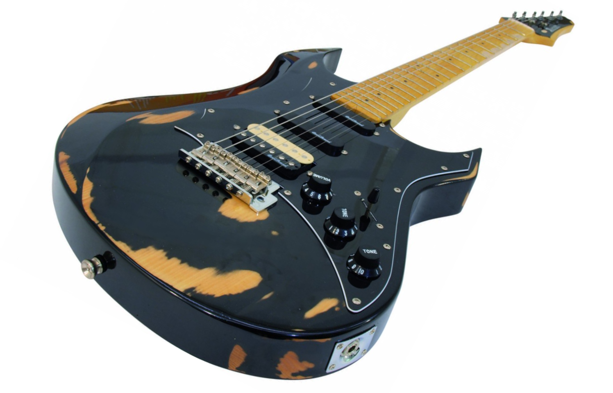
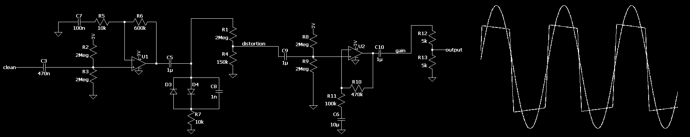

There is a few things better than shanties around a campfire after another day of sailing adventures. Guitar accompanying the singing makes the experience delightful. So how about stepping up the game by introducing an electric guitar into the equation? The only thing holding us back is lack of power and space taken by the guitar amplifier. Surely sounds like a nice excuse for me to renew my old electric guitar and convert it to an electronic guitar with a built-in amp and battery.
The guitar I had has been modified over the years of use and now finished unrecognizable from its original Dimavery ES-311 (up). The only part left from its predecessor is a body. Everything else has been replaced. Neck has been transplanted from Fender, bridge from Jackson, original pickguard was changed to a laser cut 3mm stainless steel plate, pickups were swapped and electronics rewired to support three humbuckers, tremolo has been blocked and body repainted with chameleon effect spray paint. Finally, control panel for amplifier and 20W speaker were added, creating one of a kind electronic guitar.


Electronics, apart from pickup wiring, consisted out of preamplifier and overdrive line (schematic below) and a class D amplifier module. Future modifications will add delay effect and a high pass filter to save battery life. Overall, the guitar is louder than an acoustic and also smaller and more damage resistant (at a cost of being heavy). The sound of this guitar is broadly adjustable through tone control, pickup select and amplifier drive, which is a huge advantage. Battery life at medium volume is slightly below 10h, which is more than enough for a two-day voyage.
